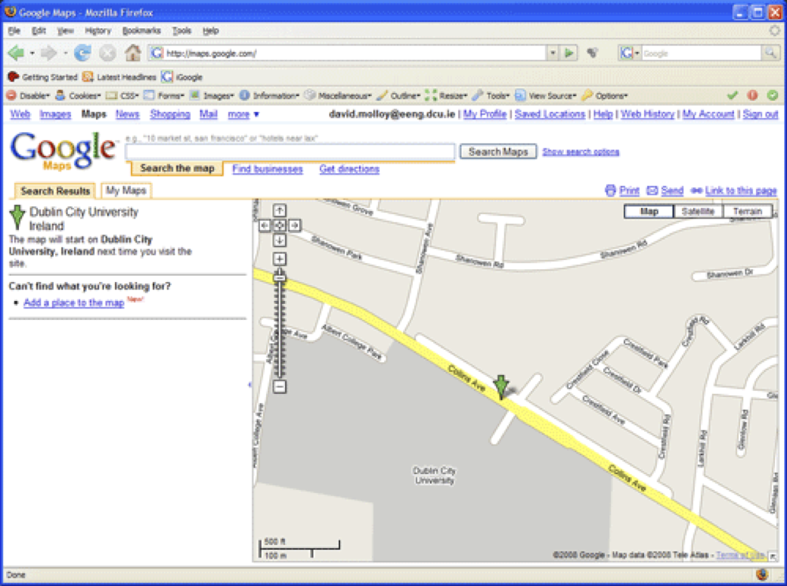
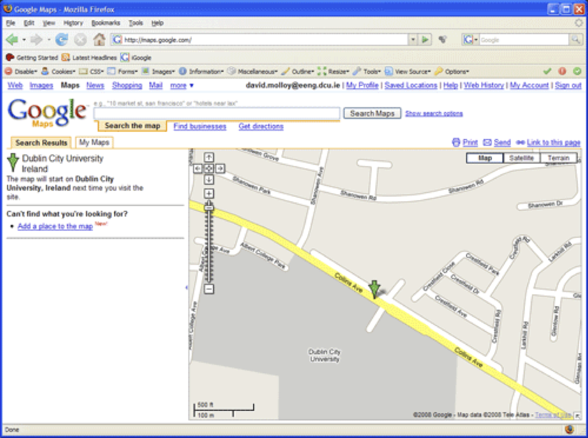
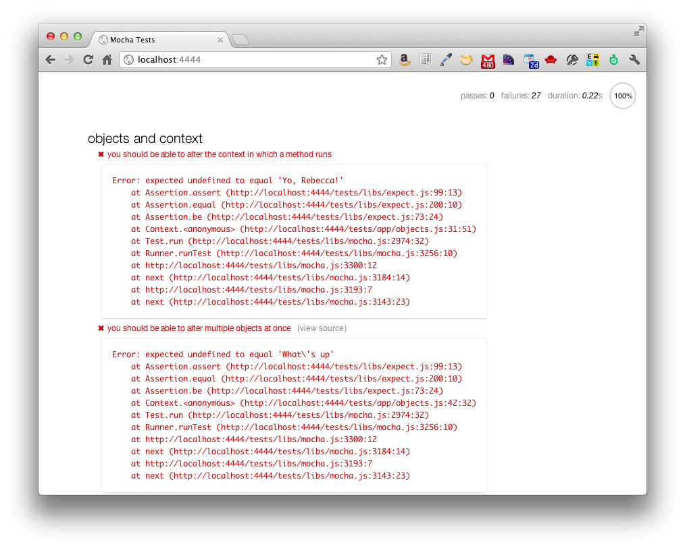
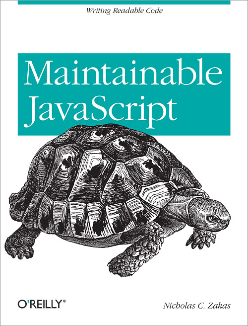
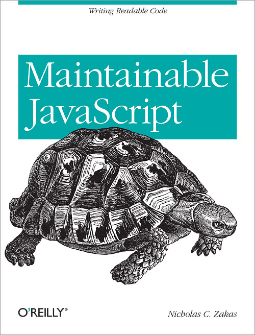

it("you should be able to determine the location of an item in an array", function() {
expect(answers.indexOf(a, 3)).to.be(2);
});
it("you should be able to add the values of an array", function() {
expect(answers.sum(a)).to.be(10);
});
it("you should be able to remove an item from an array", function() {
var result = answers.remove(a, 2);
expect(result).to.have.length(3);
expect(result.join(' ')).to.be('1 3 4');
});
it("you should be able to add an item to the end of an array", function() {
var result = answers.append(a, 10);
expect(result).to.have.length(5);
expect(result[result.length - 1]).to.be(10);
});


 


require.config({
deps: ["main"],
paths: {
// JavaScript folders
libs: "../assets/js/libs",
plugins: "../assets/js/plugins",
// Libraries
jquery: "../assets/js/libs/jquery",
lodash: "../assets/js/libs/lodash",
backbone: "../assets/js/libs/backbone"
},
shim: {
backbone: {
deps: ["lodash", "jquery"],
exports: "Backbone"
}
}
});
The RequireJS config from [Backbone Boilerplate](https://github.com/tbranyen/backbone-boilerplate)


Is it unreasonable to ask for a GUI so that whatever I’m doing works like all the other programs I use all day?Dark_Prism on Reddit
Now you can berate me for not understanding the Terminal if you like, but I’ll trade your rubygems for my under-colour removal and dot gain, any day of the week. How hard should this be?Andy Clarke, author of “Hardboiled Web Design”

define([
'use!underscore',
'views/base',
'text!views/templates/searchForm.html'
], function(_, View, tpl) {
return View.extend({
template : tpl,
prepare : function() {
_.bindAll(this, 'release', '_onSearch', '_disable');
},
events : {
'submit .search-form' : '_onSearch'
},
_onSearch : function(e) {
e.preventDefault();
if (this.disabled) { return; }
var term = $.trim(this.$('.js-input').val());
if (!term) { return; }
this._disable();
this.trigger('search', term);
},
release : function() {
this.disabled = false;
this.$('.js-submit').removeAttr('disabled');
},
_disable : function() {
this.disabled = true;
this.$('.js-submit').attr('disabled', true);
}
});
});
border-radius()
-webkit-border-radius arguments
-moz-border-radius arguments
border-radius arguments
body
font 12px Helvetica, Arial, sans-serif
a.button
border-radius(5px)
[Stylus](http://learnboost.github.com/stylus/)
$blue: #3bbfce;
$margin: 16px;
.content-navigation {
border-color: $blue;
color:
darken($blue, 9%);
}
.border {
padding: $margin / 2;
margin: $margin / 2;
border-color: $blue;
}
[Sass](http://sass-lang.com/)
This is a lie
[LESS](http://lesscss.org/)
A good programmer is a lazy programmer;Paraphrased from Philipp Lenssen, “Why Good Programmers are Lazy and Dumb”
only lazy programmers will want to write
the kind of tools that might replace them
in the end. But for a lazy programmer to be
a good programmer, he or she must be
incredibly unlazy when it comes
to learning how to stay lazy.